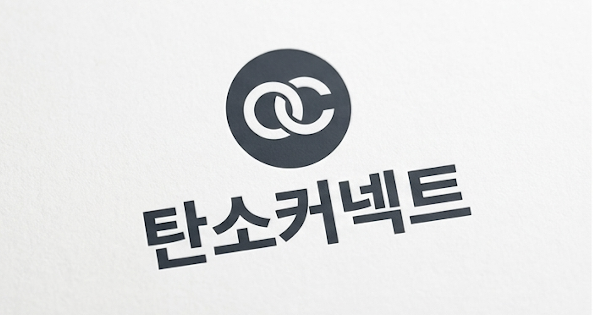
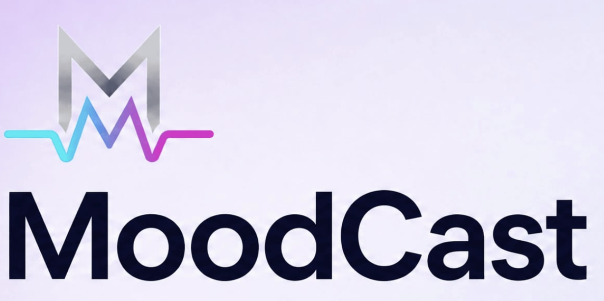
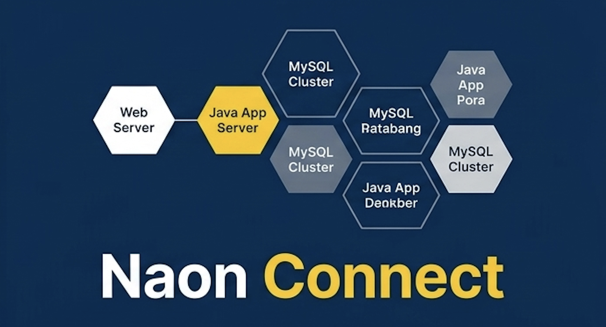
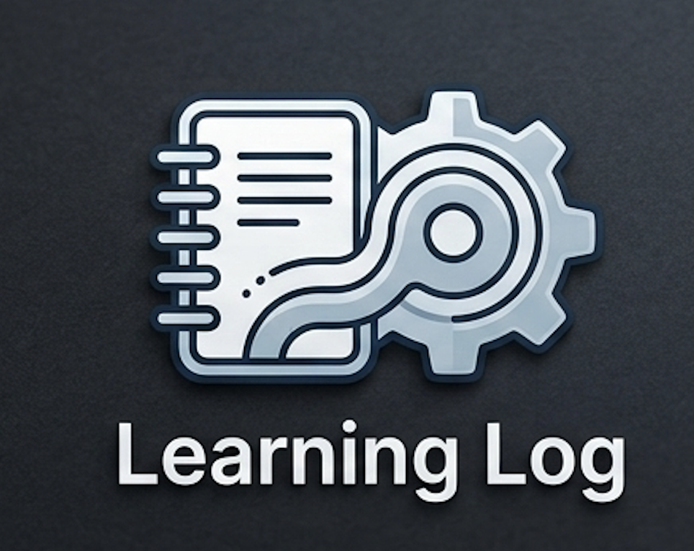

SYSTEMATIC CODE. SCALABLE ARCHITECTURE.
견고한 서버와 안정적인 서비스를 만드는 백엔드 개발자입니다.
Java와 Spring 기반의 API 설계, 데이터 모델링, 클라우드 배포까지 사용자 경험을 지탱하는 백엔드 흐름을 깊게 고민합니다.
About Me
문제를 구조화하고 끝까지 개선하는 신입 백엔드 개발자
사용자의 행동이 데이터와 서버 로직을 거쳐 안정적인 결과로 이어지는 과정을 좋아합니다. 요구사항을 작게 나누고, 읽기 쉬운 코드와 명확한 API 명세를 바탕으로 누구나 함께 사용하고 싶은 서비스를 만드는 데 집중합니다. 이러한 가치관을 바탕으로 실제 프로젝트에서 다음과 같은 기술적 고민을 실천해 왔습니다.
Spring Boot, JPA, MySQL, AWS를 활용해 프로젝트를 완성했으며, 장애를 방지하는 로깅과 예외 처리, 그리고 테스트 가능한 구조를 끊임없이 고민하며 개선하고 성장을 하고 있습니다.
API 설계
명확한 요청과 응답 구조를 바탕으로 프론트엔드와 협업하기 쉬운 REST API를 설계합니다.
데이터 모델링
서비스 요구사항을 관계형 데이터베이스 구조로 정리하고 조회 성능과 확장성을 함께 고려합니다.
꾸준한 개선
기능 구현 이후에도 예외 처리, 테스트, 배포 흐름을 점검하며 더 안정적인 코드로 다듬습니다.
Tech Stack
서비스를 끝까지 완성하기 위한 기술 스택
웹 화면부터 서버, 데이터베이스, 배포 자동화까지 실제 프로젝트 흐름에 맞춰 학습하고 적용했습니다.
Backend
Database
Infra
DevOps
Projects
주요 프로젝트




Contact
함께 고민하며 성장하는 백엔드 개발자입니다.
팀의 목표를 기술적으로 뒷받침하고, 동료들과 함께 더 나은 서비스를
만들어 가겠습니다.
책임감을 바탕으로 팀의 프로젝트에 실질적인 가치를 더하는 개발자가
되겠습니다.